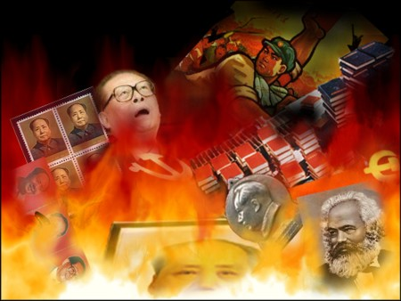

22/3/05 — Từ DAJIYUAN.COM
|
 |
Mấy chục năm vừa qua, tư tưởng của ĐCSTQ và tuyên truyền của ĐCSTQ đã lên lỏi vào từng tế bào huyết quản của xã hội, và con tà linh ĐCSTQ (Đảng cộng sản Trung Quốc) gắn vào từng ngóc ngách của xã hội. Mỗi đơn vị công tác, mỗi gia đình đều có nhiều sách vở, chân dung, phim nhạc,… cùng các vật phẩm tuyên truyền khác. Khi đang bị ĐCSTQ thâu tóm và tẩy não, dân chúng đã tư duy và hành động một cách không ý thức theo lô-gíc mà đảng cộng sản cưỡng chế nhồi nhét vào. Con ma u linh đến từ phương Tây ấy đã mang theo đói rét, tử vong, chiến tranh, và vô số tai hoạ bất tận. Những người ngây thơ thậm chí còn đặt chân dung kẻ cầm đầu ĐCSTQ trong xe để “tránh tà”. Mà thật không ngờ, đó lại chính là đánh dấu của tà linh cộng sản tà ác. Những vật phẩm của cộng sản đang phát tán tà ác, có thể đầu độc nhân dân bất kể lúc nào.
Do vậy, thời báo Đại Kỷ Nguyên khuyến nghị: Hãy tiêu huỷ tất cả các vật phẩm như sách vở, chân dung, tượng khắc, cờ xí, huy hiệu,… của đảng cộng sản, không để cho tà linh kia còn có chỗ mà gắn vào.
Hỡi tất cả nhân dân Trung Quốc Đại Lục, chúng ta hãy triệt để tiêu trừ sạch mọi móng vuốt mà con tà linh cộng sản kia đang găm vào từng gia đình. Từ đó thoát khỏi bóng tối của tà linh cộng sản, bước sang một ngày mới hạnh phúc tốt đẹp hơn.
Biên tập Đại Kỷ Nguyên DAJIYUAN.COM
22/3/05
{kind=link}